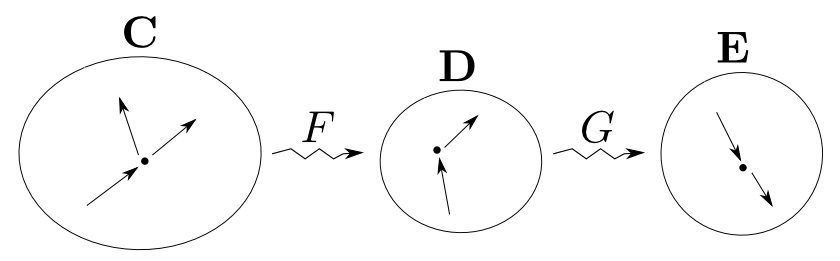
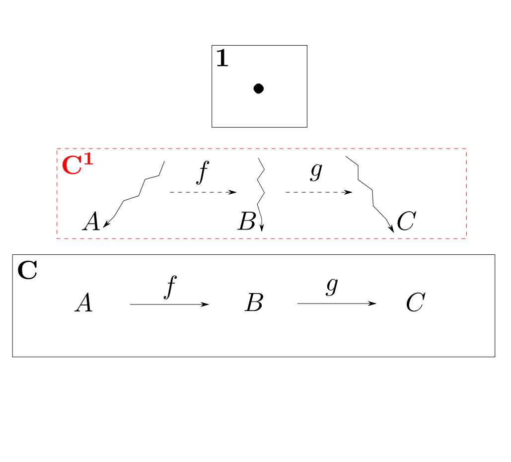
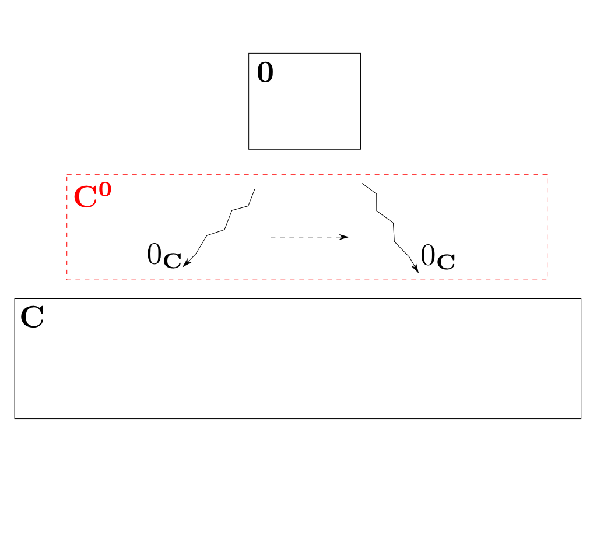
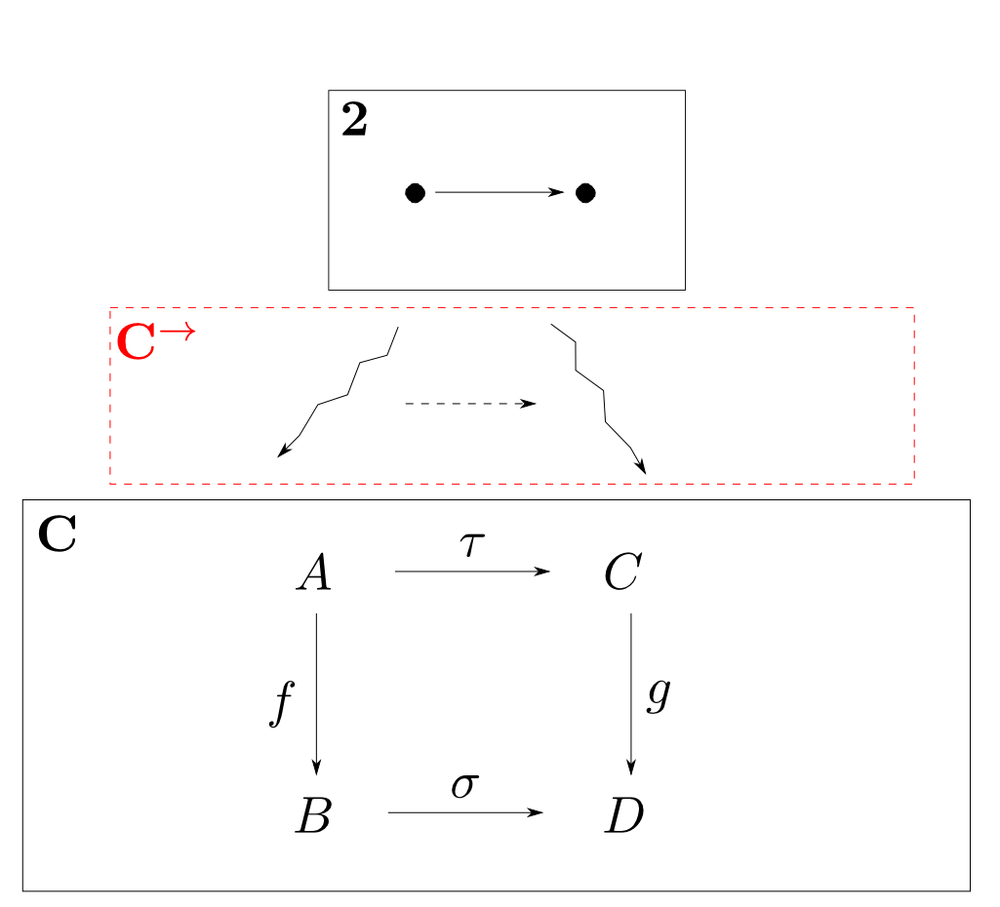

圏論勉強会
第3回
@ワークスアプリケーションズ
中村晃一2013年5月30日 $$ \newcommand\append{{+\hspace{-.7em}+}} $$
謝辞
この勉強会の企画，会場設備の提供をして頂きました
㈱ ワークスアプリケーションズ様
にこの場をお借りして御礼申し上げます。
この会について
- 圏論(category theory)を題材にいろんなことを学びます。
- 分かり易さを重視して初歩的な例を多用します。
- 関数型言語の経験がある方がより楽しめると思います。資料中では主にHaskellを使います。
- 中高生も数人見ているらしいのでプログラミングと関係が浅い内容も取り上げます。
- この資料はhttp://nineties.github.com/category-seminarに置いてあります。
第3回: 様々な圏
第3回の内容
今回は様々な圏と見なせる数学的構造を沢山見ていきます。 また,前回モノイド・群で確認した事実の圏論による一般化も行います。
定義の復習
初回に紹介した各種概念の復習をします。自然変換はまだよく分からないという人が多いと思いますが,今後徐々に理解を深めて行けば良いです。
圏の定義
圏(category)とは
- 対象(object):$A,B,C,\cdots$
- 射(arrow,morphism):$f,g,h,\cdots$
- 射の合成(composition): $\circ$
からなり,以後の条件を全て満たすものである。
任意の射$f$には
- ドメイン(domain): $\mathrm{dom}(f)$
- コドメイン(codomain): $\mathrm{cod}(f)$
という２つの対象が備わる。
$\mathrm{dom}(f) = A$,$\mathrm{cod}(f) = B$である事を $ f: A\rightarrow B$ と表す。

射$f:A\rightarrow B$,$g:B\rightarrow C$が存在するならば,
- 合成射(composite) $ g\circ f: A \rightarrow C $
も存在する。

任意の射$f: A \rightarrow B$, $g: B \rightarrow C$, $h: C \rightarrow D$に対して 結合律(associative law)
が成り立つ。すなわち,下図が可換である。
任意の対象$A$に対して
- 恒等射(identity) $ 1_A: A \rightarrow A $
が存在し,任意の$f: A \rightarrow B$に対して単位元律(identity law)
が成り立つ。すなわち,右下図が可換である。

同型の定義
$f: A\rightarrow B$に対して,$g: B\rightarrow A$が存在し,
が成り立つならば$f$を同型射(isomorphism)と呼ぶ。
また,圏$\mathbf{C}$において$A$と$B$の間に同型射が存在するならば,$\mathbf{C}$において$A$は$B$と同型(isomorphic)であると言い,
$$ A \cong B$$
と表す。

函手の定義
圏$\mathbf{C}$から圏$\mathbf{D}$への函手$F: \mathbf{C}\rightarrow\mathbf{D}$とは $\mathbf{C}$の各対象$A$に$\mathbf{D}$の対象$F(A)$を対応付け, $\mathbf{C}$の各射$f: A\rightarrow B$に$\mathbf{D}$の射$ F(f): F(A) \rightarrow F(B) $を 対応付ける2つの関数の組であり,以下の条件を満たすものである。
- 任意の$\mathbf{C}$の射$f: A\rightarrow B$, $g: B\rightarrow C$に対して $$ F(g\circ f) = F(g) \circ F(f) $$
- 任意の$\mathbf{C}$の対象$A$に対して $$ F(1_A) = 1_{F(A)} $$
自然変換の定義
主役級の圏
集合の圏:$\mathbf{Sets}$
- 対象: 集合
- 射: 関数
- 射の合成: 関数合成
からなる非常に巨大な圏です。 $\mathbf{Sets}$ではなく$\mathbf{Set}$と書いている本もあります。
宇宙
$\mathbf{Sets}$の対象全てからなる集合を$U$と表す事にします。
すると$U$は集合なので「$U$自体も$\mathbf{Sets}$の対象の一つなのか？」,つまり $$ U \in U $$ なのかという疑問が生じます。これは,何か気持ち悪い感じがします。
実際これは「カントールのパラドックス」と呼ばれる有名な逆理を導いてしまいます。
宇宙
そこで,数学を行うのに必要なありとあらゆる集合を要素として持つ,ものすごく巨大な領域$U$(宇宙と呼びます)が存在する事を仮定して, 単に「集合」と言った場合には「($U$に属する)集合」という限定詞が付く事にします。
宇宙
正確には,集合$U$と$U$の要素を区別する為に$U$の要素を「小さい集合」と呼びます。つまり,$\mathbf{Sets}$とは「小さい集合と関数からなる圏」なのです。
この会の目的はこうした基礎論の学習ではないので「集合」という言葉を気軽に使いますが,このような背景があることは知っておいて下さい。
モノイドの圏:$\mathbf{Mon}$
- 対象: モノイド
- 射: モノイドの準同型
- 射の合成: 準同型の合成
からなる圏を$\mathbf{Mon}$と言います。
モノイド一般について考える場合の舞台となります。
群の圏:$\mathbf{Grp}$
- 対象: 群
- 射: 群の準同型
- 射の合成: 準同型の合成
同様に群とその準同型写像からなる圏も考えられこれを$\mathbf{Grp}$と呼びます。
構造と準同型からなる圏
モノイドや群は構造を持つ集合であり,準同型は構造を保つ関数(写像)です。つまり$\mathbf{Mon}$や$\mathbf{Grp}$は構造と準同型からなる圏の一例です。
構造と準同型からなる圏
このような圏には多種多様なものが存在します。圏を身近に感じてもらう為にいくつか紹介しようと思います。
- ベクトル空間と線形写像
- グラフとグラフ準同型
- 実数の集合と連続関数
- 位相空間と連続写像
- 順序集合と単調写像
ベクトル空間の圏
ベクトルとはいくつかの条件を満たす「足し算」と「定数倍」を備えた物でした。この概念を一般化するとベクトル空間(vector space)となります。
ベクトル空間の構造(つまり「足し算」と「定数倍」)を保つ写像が線形写像(linear mapping)です。
$$ \begin{aligned} & F(\vec{x} + \vec{y}) = F(\vec{x}) + F(\vec{y}) \\ & F(k\vec{x}) = kF(\vec{x}) \end{aligned} $$グラフの圏
グラフ(graph)とは頂点と辺からなる構造です。この構造を保つ写像がグラフ準同型(graph homomorphism)です。つまり,辺$e$が辺$F(e)$に移るなら$e$の両端も$F(e)$の対応する両端に移るような写像です。
実数の集合と連続関数の圏
実数の集合には点と点のつながりを表す位相という構造が入っています。左下図の様なグラフとして表した時につながっている関数を連続関数(continuous function)と言って,これは位相を保ちます。
位相空間の圏$\mathbf{Top}$
これを一般化すると位相空間(topological space)と連続写像(continuous mapping)というものになります。直感的に説明すると位相空間とはつながりという情報を持った図形で,連続写像とは切ったり穴を開けない写像です。

右のアニメーション(wikipedia/位相同型)は連続写像の中でも位相同型写像(homeomorphism)という「元に戻せる連続写像」を表しています。 位相空間としてはコーヒーカップとドーナツは本質的に同じであるという事です。
順序集合と単調写像
整数や実数などには順序($\leqq$)という構造が入っています。このような集合を順序集合(さらに一般化すると半順序集合)と言います。 そして順序を保つ写像を単調写像(monotone mapping)と言います。
例えば(広義)単調増加な実数列 $$ a_0 \leqq a_1 \leqq a_2 \leqq \cdots $$ とは「$i \leqq j$ならば$a_i \leqq a_j$」を常に満たす数列なので,自然数から実数への単調写像になっています。
具体圏
これまでに見てきた圏は構造を持った「集合」と構造を保つ「関数(写像)」からなる圏でしたので,
$\mathbf{Sets}$の一部と同一視可能です。
この事の定式化はまだ出来ませんが,このような圏を具体圏(concrete category)と言います。
型の圏
$L$を関数型プログラミング言語とした時,
- 対象: $L$におけるデータの型
- 射: $L$における関数
- 射の合成: 関数の合成
という圏を作れます。これを$\mathbf{C}(L)$と表す事にします。
また,よく登場するので$\mathrm{Hask} = \mathbf{C}(\text{Haskell})$と略記します。
プログラムの意味
$\mathbf{C}(L)$における「型」と「関数(プログラム)」はただのコード(を適当な同値関係で割ったもの)であって,それ自体は意味を持ちません。
「型」と「プログラム」にある構造を持ったドメインと呼ばれる集合とその間の関数を割り当てるとプログラムに意味を与える事が出来るのですが,この関係は$\mathbf{C}(L)$からドメインのなす圏$\mathbf{D}$への函手 $$ \mathbf{C}(L) \rightarrow \mathbf{D} $$ となります。
分かりやすく言えば,コンパイラは函手と見なせるという事です。
証明の圏
「今日が$5$月の晴れた日である」という仮定がもし正しいならば「今日が$5$月である」という結論も正しいと考えられます。
「かつ」を表す記号を$\wedge$とし
- $A$:今日が$5$月である
- $B$:今日が晴れた日である
と記号化すると,$A\wedge B$という論理式から$A$という論理式を作り出す操作として形式化出来ます。
このように論理式から論理式を導く規則を推論規則(deduction rule)と言い,
推論を積み重ねて$\varphi_0$から$\varphi_n$を得る事を仮定$\varphi_0$の下での$\varphi_n$の(形式的)証明(proof)と呼びます。
すると論理式を対象とし,証明を射とする圏が出来ます。
圏の圏:$\mathbf{Cat}$
- 対象: (小さい)圏
- 射: 函手
- 射の合成: 函手の合成
という圏を考える事が出来ます。これを$\mathbf{Cat}$と言います。
脇役的な圏
離散圏
集合を一つ取って,それを圏と見なす事も可能です。
- 対象: 集合の要素
- 射: 恒等射のみ
とします。これを離散圏(discrete category)と言います。
恒等射は常に存在するので、下図の様に省略して描きます。
モノイド・群
モノイドを一つ取ればは「対象が一つの圏」となります。
群は「対象が一つで,全ての射が同型射である圏」です。
注
例えば「列と連結」からなるモノイドを思い出して下さい。これを一つの圏として解釈すると 射が個々の列であり,射の合成が連結であり,対象には特に意味がありません。
射とは必ずしも関数ではないので注意して下さい。
前順序集合
任意の対象$A$,$B$について$A$から$B$へ向かう射が高々$1$つしかない圏を前順序集合(preordered set)と言います。
$A$から$B$へのただ一つの射を$A \leqq B$と表す事にして,定義を翻訳すると
が常に成り立つ集合ということになります。
例えば$\leqq$を「年齢の大小」にすると,人の集合は前順序集合となります。
一方$\leqq$を「グー・チョキ・パーの強さの比較」とすると推移律を満たさないのでこれは前順序になりません。
半順序集合
任意の対象間に,向きを区別せずに数えて射が高々$1$つしかない圏を半順序集合(partial ordered set)と言います。
これも翻訳すると前順序集合であって
を満たす集合という事になります。
先ほどの「年齢の大小」の例は年齢が等しくても同じ人とは限らないので半順序集合にはなりません。
半順序集合の例
$\leqq$を$\subseteq$と解釈すると半順序集合となります。 他の射を合成して得られる射は省略しています。
半順序集合の例
$A \leqq B$を「$B$が$A$で割り切れる」と解釈すると半順序集合となります。
半順序集合の例
$\leqq$を自然数や実数などの通常の大小関係として解釈しても半順序となります。
これらの様に,全てのペア$A$,$B$間に$A \leqq B$か$B\leqq A$が成り立つ半順序集合を全順序集合(totally ordered set)と言います。

空圏$\mathbf{0}$
対象も射も全く無い圏を空圏と言い,$\mathbf{0}$と表します。
$\mathbf{1}$
対象が$1$つ,射が恒等射のみの圏を$\mathbf{1}$と表します。
$\mathbf{2}$
対象が$2$つで,恒等射以外の射が下図のように$1$つある圏を$\mathbf{2}$と表します。
$\mathbf{3}$
対象が$3$つで,恒等射以外の射が下図のように$3$つある圏を$\mathbf{3}$と表します。
何の役に立つのか?
まず,どれも分り易いので圏論を学習する際の練習用に使えます。
実用上は函手とセットで考える事が多いです。
$\mathbf{1},\mathbf{2},\mathbf{3}$からの函手
$\mathbf{1},\mathbf{2},\mathbf{3}$からの函手
$\mathbf{1}$から$\mathbf{C}$への函手は$\mathbf{C}$の対象と一対一に対応します。つまり,$\mathbf{1}$からの函手と対象を同一視出来るという事です。
このように
- $F:\mathbf{1}\rightarrow \mathbf{C}$は$\mathbf{C}$の対象と同一視可能
- $F:\mathbf{2}\rightarrow \mathbf{C}$は$\mathbf{C}$の射と同一視可能
- $F:\mathbf{3}\rightarrow \mathbf{C}$は$\mathbf{C}$の合成可能な射の対と同一視可能
という事が言えます。
対象や射などの「もの」と函手などの「マッピング」が,相互に移り変われるものである事を理解することが大切です。
離散圏からの函手
離散圏$A$からの函手は$\mathbf{C}$の対象から(重複を許して)$A$の要素と同じ数だけ対象を選ぶ事と解釈出来ます。
「型」としての圏
このように函手$F: \mathbf{J}\rightarrow \mathbf{C}$は圏$\mathbf{J}$を「型」と見なすとその型に当てはまる$\mathbf{C}$の部分を取り出すものだと考える事が出来ます。
$\mathbf{0}$からの函手
最後に一つ分かりにくい話をしますと,空圏$\mathbf{0}$から任意の圏$\mathbf{C}$へは唯一つだけ函手が存在します。これを$0_{\mathbf{C}}$と書くことにします。
空関数
知っておいて欲しいのは空集合$\emptyset$から任意の集合への関数が唯一つだけ存在する事を証明出来るという事です。これを空関数(empty function)と言います。この事実は今後も登場します。
【説明】
$A$から$B$への関数とは「任意の$a\in A$について唯一つの$b\in B$を対応させる関係」の事です。これは$(a, b)$の対の集合として表現出来ます。つまり関数$f$とは「任意の$a\in A$について,$(a,b)\in F$となるような$b\in B$が唯一つ存在するような集合$F$」として定義されます。ここで$A = \emptyset$の時に$F = \emptyset$とすると,任意の$B$について$F$は上の条件を満たします。つまり$F = \emptyset$が定める関数が存在します。これが空関数です。$A = \emptyset$なので$F = \emptyset$以外有り得ませんから唯一性も示されます。
圏から圏を作る
積圏
圏$\mathbf{C}$と$\mathbf{D}$の対象の対,射の対を新たな対象・射として構成した圏を積圏(product category)と言い$\mathbf{C}\times\mathbf{D}$と表します。射の合成は対のそれぞれを合成する事によって定義します。 $$ (f_1,f_2)\circ(g_1,g_2) = (f_1\circ g_1, f_2\circ g_2) $$
函手圏
圏$\mathbf{C}$と圏$\mathbf{D}$を固定して
- 対象: $\mathbf{C}$から$\mathbf{D}$への函手
- 射: 自然変換
- 射の合成: 自然変換の(垂直)合成
という圏を考える事が出来ます。これを函手圏(functor category)と言い$\mathbf{D}^\mathbf{C}$と表します。
こんな感じです。ガクガクの矢印が函手で点線の矢印が自然変換です。分り易い例をいくつか見てみましょう。
$\mathbf{C}^\mathbf{1}$
$\mathbf{C}^\mathbf{1}$の対象は$\mathbf{1}$から$\mathbf{C}$への函手です。これは$\mathbf{C}$の対象と同一視出来るので同じ記号で表す事にします。函手$A$の像(行き先)は対象$A$一つですから,任意の射$f: A\rightarrow B$が一つの自然変換を定めます。逆も然りです。
つまり $$ \mathbf{C}^\mathbf{1} \cong \mathbf{C} \quad \text{in $\mathbf{Cat}$}$$ です。
$\mathbf{C}^\mathbf{0}$
$\mathbf{C}^\mathbf{0}$の対象は空圏$\mathbf{0}$から$\mathbf{C}$への函手つまり,$0_{\mathbf{C}}$一つだけです。すると$0_{\mathbf{C}}$の像は空集合ですので,自然変換は$0_{\mathbf{C}}$をそれ自身に写すもののみです。
つまり$\mathbf{C}^\mathbf{0}$は対象が一つで恒等射のみなので $$ \mathbf{C}^\mathbf{0} \cong \mathbf{1} \quad \text{in $\mathbf{Cat}$}$$ です。
$\mathbf{C}^{\rightarrow}$
$\mathbf{2}$から$\mathbf{C}$への函手のなす圏を考えます。 積圏$\mathbf{C}\times\mathbf{C}$と混同しないように$\mathbf{C}^{\rightarrow}$と表す事にします。
前に見たようにこの圏の対象は$\mathbf{C}$の射です(右図では$f$と$g$)。 すると右図のような四角い可換図式を作る$2$つの射(右図では$\tau$と$\sigma$)が自然変換です。
この様な「射」を対象とし「可換図式」を射とする圏を射圏(arrow category)と言います。
他にも圏から圏を構成する方法は沢山ありますが,時間が無さそうなので今後必要になったら随時紹介していく事にします。
自由対象
自由モノイド
前回自由モノイド(free monoid)というモノイドを紹介しました。
自由モノイドとは「列と連結」からなるモノイドと思ってよく,任意の他のモノイドへの準同型が「長さ$1$の列のマッピング」のみによって決定されるという良い性質を持っていました。
今日はこれの一般化を考えたいのですが,具体例を作るのは簡単なのでいくつか見てみます。
半群
半群(semigroup)とは集合$M$，$M$上の二項演算$\cdot$の組$(M, \cdot)$で，以下の条件を満たすものである。
- 結合律: 任意の$x,y,z \in M$について $$ (x\cdot y)\cdot z = x\cdot (y \cdot z)$$
つまり,半群に単位元の存在という条件を加えたのがモノイドです。
では自由半群を作ってみましょう。
まず種になる集合(生成系)が必要です。仮に$A = \{a,b,c\}$とします。
これらに２項演算を$0$回以上適用して出来上がる項は
$$ a,\,b,\,c,\,ab,\,bc,\,\cdots,\,(ab)c,\,a(bc)\cdots $$です。見やすさの為に$\cdot$は省略します。
結合律があるので$(ab)c=a(bc)$などが成り立ちますから括弧を外すと
$$ a,\,b,\,c,\,ab,\,bc,\,\cdots,\,abc,\,\cdots $$となります。他に等式はありませんから,これらを別々の元として持つ構造が$A$上の自由半群となります。
つまり自由半群とは「長さが$1$以上の列(と連結)」です。
マグマ
マグマ(magma)とは集合$M$，$M$上の二項演算$\cdot$の組$(M, \cdot)$をもつものである。
マグマに結合律を加えたのが半群です。
では自由マグマを作ってみましょう。
生成系を$A = \{a,b,c\}$とします。
これらに２項演算を$0$回以上適用して出来上がる項は
$$ a,\,b,\,c,\,ab,\,bc,\,\cdots,\,(ab)c,\,a(bc)\cdots $$です。
マグマには一切の等式がないので,これらを全て異なる元として持つ構造が自由マグマです。
つまり自由マグマとは「葉にのみ値を持つ二分木(とその連結)」です。
自由マグマ
可換モノイド
可換モノイド(commutative monoid)とはモノイド$(M,\cdot)$であって,以下の条件を満たすものである。
- 可換則: 任意の$x,y \in M$について $$ x\cdot y = y\cdot x $$
では自由可換モノイドとはどんな構造でしょうか？
冪等モノイド
冪等モノイド(idempotent monoid)とはモノイド$(M,\cdot)$であって,以下の条件を満たすものである。
- 冪等則: 任意の$x \in M$について $$ x\cdot x = x$$
では自由冪等モノイドとはどんな構造でしょうか？
冪等可換モノイド
冪等可換モノイド(idempotent commutative monoid)とはモノイド$(M,\cdot)$であって冪等則と可換則を満たすものである。
では自由冪等可換モノイドとはどんな構造でしょうか？
是非、何らかの代数の本を読むことをお薦めしますが、以下を眺めるだけでも楽しいと思います。
wikipedia/マグマwikipedia/半群
wikipedia/モノイド
wikipedia/群
プログラミングと代数
プログラミングで扱う様々なデータ構造は何らかの代数構造であるということに気づく事が大切です。
前回,$\mathbf{foldMap},\mathbf{fold[r|l]}$でモノイド準同型を作って様々な計算が行える事を見ましたが,同様の事が出来ることになります。その際,何が出来て何が出来ないかは代数の構造を調べれば良いという事になります。
自由対象
- 自由モノイドは$\mathbf{Mon}$の自由対象
- 自由半群は「半群と準同型のなす圏」の自由対象
- 自由マグマは「マグマと準同型のなす圏」の自由対象
などと言います。ということで圏$\mathbf{C}$の自由対象というものを考えます。
これらは全て「生成系(集合)と要素のマッピング(関数)」という下部の構造($\mathbf{Sets}$の中にある)から,上部の構造$\mathbf{C}$における射が一意的に決定されるという性質を持っています。
こんな感じ
忘却函手
$\mathbf{C}$(構造を持つ集合と構造を保つ関数の圏)の「構造」を捨てて$\mathbf{Sets}$(集合と関数の圏)そのまま移す函手 $$ |-| : \mathbf{C}\rightarrow \mathbf{Sets}$$ を忘却函手(forgetful functor)と言います。
自由対象(狭義)
$|-|:\mathbf{C}\rightarrow\mathbf{Sets}$を忘却函手とする。
$\mathbf{C}$の対象$F(A)$が集合$A$上の自由対象であるとは,ある関数$i: A\rightarrow |F(A)|$を備えており,任意の$\mathbf{C}$の対象$X$と関数$f: A\rightarrow |X|$について,下図が可換となるような射$\overline{f}: F(A)\rightarrow X$が唯一に定まる事である。
Haskellでの実装例
マグマを例に取って実装してみます。コード:Magma.hs
module Magma where
-- モノイドはマグマの一種なのでimportしときます。
import Data.Monoid
import Data.Foldable
-- マグマとは集合A(型aと対応)とA上の二項演算(magappendと対応)を
-- 備えた代数構造です。
class Magma a where
magappend :: a -> a -> a
-- 自由マグマとは二分木です。
-- Nodeが自由マグマの積。
-- Leafが自由対象のスライドにあるiです。
data FreeMagma a = Leaf a | Node (FreeMagma a) (FreeMagma a) deriving (Show, Eq)
-- foldMapMagma fが自由対象のスライドにある「fバー」です。
foldMapMagma :: Magma b => (a -> b) -> FreeMagma a -> b
foldMapMagma f (Leaf x) = f x
foldMapMagma f (Node l r) = foldMapMagma f l `magappend` foldMapMagma f r
-- 実際にはData.Foldableのインスタンスにした方が良いでしょう。
-- foldr, foldl, find, elem, notElem, concat, forM_, ....などなどの便利関数が
-- 使える様になります。
-- 自由マグマはもちろんマグマです。
instance Magma (FreeMagma a) where
magappend = Node
-- モノイドもマグマです。
newtype WrappedMonoid a = WrapMonoid a deriving (Show, Eq)
instance Monoid a => Magma (WrappedMonoid a) where
WrapMonoid x `magappend` WrapMonoid y = WrapMonoid (x `mappend` y)
-- モノイドでないマグマ演算の例として
-- "Hello" `magappend` "World" == "(Hello World)"
-- みたいに括弧で囲むものを作ってみます。
newtype Kakko = Kakko String deriving (Show)
instance Magma Kakko where
Kakko x `magappend` Kakko y = Kakko ("(" ++ x ++ " " ++ y ++ ")")
Haskellでの実装例
ghciで実行してみましょう。
Prelude> :load "Magma.hs"
[1 of 1] Compiling Magma ( Magma.hs, interpreted )
Ok, modules loaded: Magma.
-- 二種類の木を作ります。
*Magma> let tree1 = (Leaf 0 `magappend` Leaf 1) `magappend` Leaf 2
*Magma> let tree2 = Leaf 0 `magappend` (Leaf 1 `magappend` Leaf 2)
-- 自由マグマでは演算順序が区別されます。
*Magma> foldMapMagma (Kakko . show) tree1
Kakko "((0 1) 2)"
*Magma> foldMapMagma (Kakko . show) tree2
Kakko "(0 (1 2))"
-- モノイドの演算をそのまま使うことも出来ます。
*Magma> foldMapMagma (WrapMonoid . Sum) tree1
WrapMonoid (Sum {getSum = 3})
*Magma> foldMapMagma (WrapMonoid . All . even) tree1
WrapMonoid (All {getAll = False})
おまけ
位相幾何学の初歩の初歩
先ほど位相空間の圏を紹介しましたが,位相空間の幾何学を位相幾何学(topology)と言います。
直感的に言うと距離や角度の概念がないグニャグニャした図形の幾何学です。
非常に深淵な分野なのですが、その入口は初心者でも楽しめる数学なのでちょっと紹介します。
線分で出来た下の3つの図形を見て下さい。これらは線分を切る事なく行き来できるので位相同型です。($\approx$という記号で表します。
ここで $$ \text{(点の数)} - \text{(線分の数)} $$ を計算してみて下さい。 全て$0$になるはずです。
先ほどの図とは位相同型でない,下の3つの図ではどうなるでしょうか？
オイラー標数
図形$X$を下図のような$n$次元での三角形($n$単体)に分割した際
$$ \chi(X) = \text{($0$単体の数)} - \text{($1$単体の数)} + \text{($2$単体の数)} - \text{($3$単体の数)} + \cdots $$
という数は分割の方法によらず位相同型な図形では等しくなるという性質があります。この不変量を$X$のオイラー標数と言います。
球面
球面のオイラー標数はいくつになるでしょうか？トーラス
トーラス(ドーナツの表面)のオイラー標数はいくつになるでしょうか？適当に切って考えましょう。

注: この切り方だと三角形の3頂点が1点にあつまるので単体分割になっておらず,胞体というものを考えることになるのですが,とりあえず値は等しくなるので資料中では分かりやすさを優先します。
代数的位相幾何学
オイラー標数は大雑把なので,実際には群などの代数構造を不変量として取り出します。 このように位相空間から不変量を取り出して代数学の手法を使って研究する分野を代数的位相幾何学(algebraic topology)と言います。
プログラミングに役に立つ事はないと思いますが、圏論は代数的トポロジーの分野で育った学問と言えるのでそうした背景は教養として知っておいて良いのではないかと思います。また計算機科学と全く関係無いわけではなく,ずっと深い所(論理の世界)で関連があります。
第3回はここで終わります
お疲れ様でした。
かなり多くの事を紹介しましたが,一度に全て理解しようとする必要はありません。
本日の内容と似た話が今後も出てきますので、徐々に理解を深めて行きましょう。